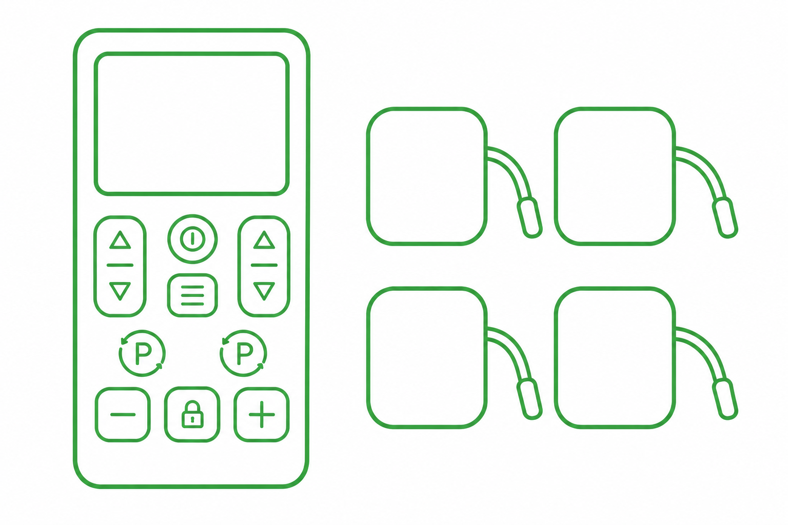

1. Elektrostymulacja
Metoda wspomagająca terapię logopedyczną, która wykorzystuje bezpieczne prądy o niskim natężeniu do pobudzania nerwów (TENS) i mięśni (EMS). Służy głównie do regulacji napięcia mięśniowego, jednak zabieg poprawia także ukrwienie tkanek oraz wpływa pozytywnie na świadomość czuciową (propriocepcję) danego obszaru ciała.
Elektrostymulacja jest stosowana i przynosi widoczne efekty w zaburzeniach połykania (dysfagii), zaburzeniach czucia, nieprawidłowościach w napięciu mięśniowym, rozszczepie podniebienia, porażeniach nerwów (np. twarzowego lub trójdzielnego), zaburzeniach motoryki narządu mowy. Bywa także wykorzystywana w terapii wad wymowy (np. rotacyzmu), nadmiernego ślinienia oraz funkcji prymarnych (np. pozycja spoczynkowa warg, żuchwy i języka). Jest niezwykle pomocna w przypadku terapii osób z ograniczoną możliwością współpracy, u pacjentów genetycznych oraz ze sprzężoną niepełnosprawnością. Jest skutecznym i bezpiecznym narzędziem, dlatego jest stosowana nawet w terapii niemowląt.